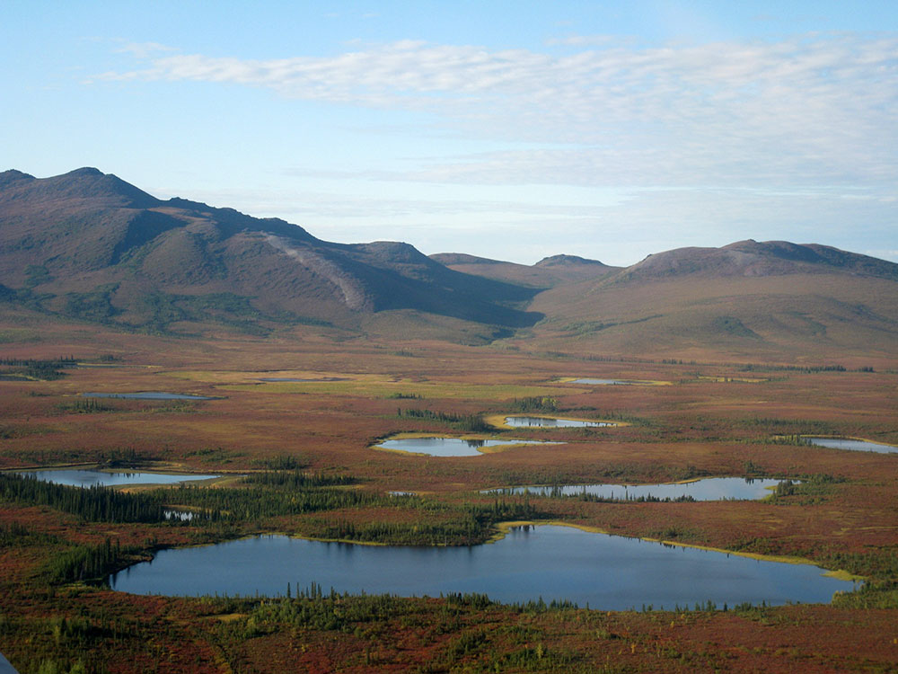
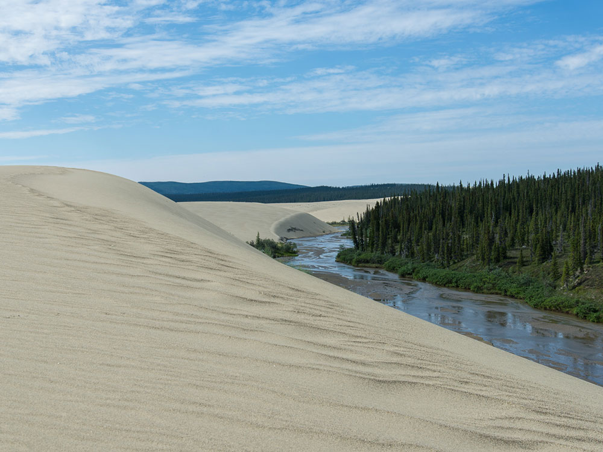
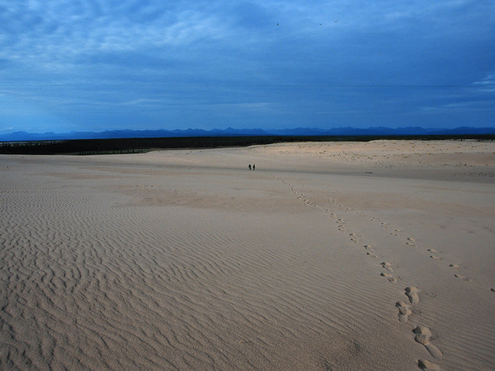
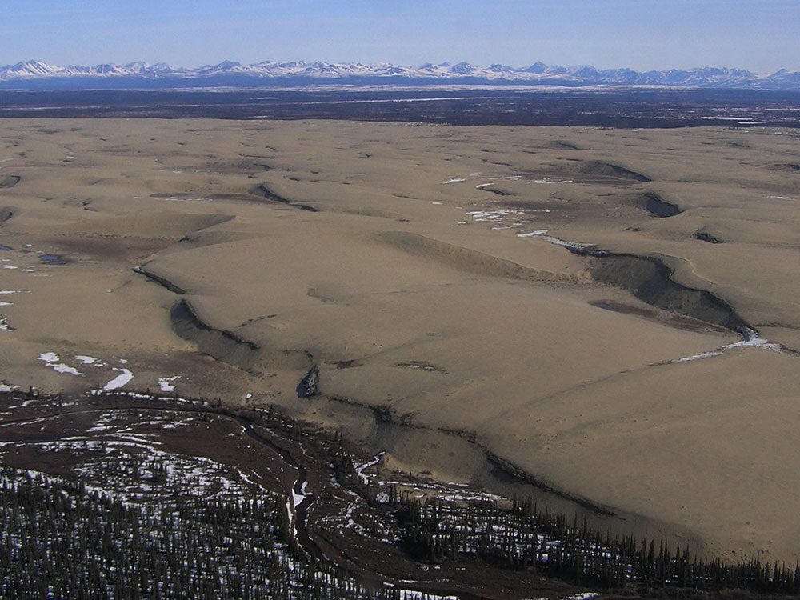
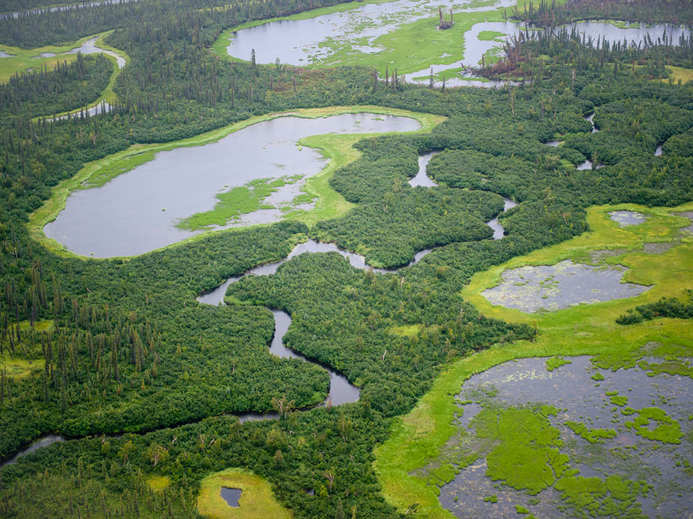

.jpg){kind=link}
National park in the Arctic region of northwestern Alaska, located about 25 miles (40 km) north of the Arctic Circle, was designated to preserve the 100 ft (30 m) high Great Kobuk Sand Dunes and the surrounding area which includes caribou migration routes
General Information
Fees apply for flights and guided trips
How to Get There
From Fairbanks, AK (~430 mi by air): Fly Alaska Airlines from Fairbanks International Airport to Kotzebue's Ralph Wien Memorial Airport (OTZ), then charter an air taxi approximately 100 miles east to the Kobuk River area, as no roads lead into the park.
Overview
Kobuk Valley National Park protects about 1.75 million acres of northwestern Alaska, about 25 miles north of the Arctic Circle. The park centers on the broad valley of the Kobuk River, between the Baird Mountains to the north and the Waring Mountains to the south. Its most famous feature is a surprise in the Arctic: the Great Kobuk Sand Dunes, about 25 square miles of golden sand dunes up to 100 feet high, formed from sand ground by ancient glaciers and blown into place by the wind. Together with the Little Kobuk and Hunt River Dunes, they are the largest active sand dunes in the Arctic. Each year, hundreds of thousands of caribou from the Western Arctic herd cross the Kobuk River on their migrations through the park.
People have relied on the Kobuk Valley's caribou for at least 9,000 years. At Onion Portage, a National Historic Landmark on the river, archaeologists have found layers of human settlement spanning thousands of years. Iñupiat people from the nearby villages of Kiana, Ambler, Shungnak, and Kobuk still hunt and fish in the park. Kobuk Valley became a national monument in 1978 and a national park in 1980, and it is managed with nearby Cape Krusenstern and Noatak as part of the Western Arctic National Parklands. With no roads, trails, or facilities, Kobuk Valley is one of the least visited national parks in the country. Its few thousand visitors come to walk the Arctic dunes, watch the caribou migration, float the Kobuk River, and experience the solitude of the Arctic.
Park Sections
The Kobuk River runs west through the middle of the park and is the main travel route. South of the river are the park's dune fields: the Great Kobuk Sand Dunes, usually reached from the river near Kavet Creek, the smaller Little Kobuk Sand Dunes, and the Hunt River Dunes. At the park's eastern edge is Onion Portage, a historic caribou crossing and archaeological site. North of the river, the Baird Mountains and the Salmon River, a Wild and Scenic River, offer rugged backcountry. The villages of Ambler, east of the park, and Kiana, west of the park, lie along the Kobuk River and serve as starting and ending points for river trips. Kotzebue, about 80 miles to the west, is the regional hub.
Sightseeing and Exploring the Park
There are no roads, scenic drives, or overlooks in Kobuk Valley. The easiest way to see the park is on a flightseeing trip from Kotzebue or Bettles. Some tours land on a gravel bar along the river or near the dunes, so visitors can walk on the sand for a few hours. For a more complete experience, many visitors float the Kobuk River, which passes through spruce forest and tundra with the Baird Mountains on the horizon and offers access to the dunes and Onion Portage.
Hiking
The park has no maintained trails, so all hiking is cross-country. The most popular hike is from the Kobuk River near Kavet Creek across tundra and forest to the Great Kobuk Sand Dunes, where visitors can wander freely across the rolling sand. Other routes lead into the Baird Mountains and along the Salmon River. Hiking on the tundra can be slow and tiring due to tussocks, wet ground, and brush, and hikers must be skilled at wilderness navigation and bear safety. Bear-resistant food containers are strongly recommended.
Other Activities
River trips are the most popular way to explore the park. Paddlers float the Kobuk River by canoe, kayak, or raft, often starting near Ambler and ending in Kiana. The river is gentle and suitable for experienced wilderness paddlers, with stops to hike to the dunes and Onion Portage along the way. The Salmon River offers a more remote float through the Baird Mountains. Anglers fish for sheefish, Arctic grayling, Arctic char, and salmon. Other activities include wildlife viewing, photography, backcountry camping on the dunes, and, in winter, watching the northern lights. Local residents also travel through the park by snowmachine and dog sled in winter.
Flora and Wildlife
The park is best known for the Western Arctic caribou herd, one of the largest in Alaska, which migrates through the Kobuk Valley twice a year. In late summer and fall, caribou swim across the Kobuk River at traditional crossings such as Onion Portage. Other wildlife includes grizzly and black bears, moose, wolves, wolverines, foxes, lynx, and many migratory birds that nest here in summer. The park lies near the northern limit of the boreal forest, where spruce woodlands meet open tundra. The dunes support rare plants, including the Kobuk locoweed, which grows nowhere else in the world.
Access
There are no roads to Kobuk Valley. Most visitors fly from Anchorage to Kotzebue on a scheduled commercial flight, then charter an air taxi into the park, about an hour's flight east. Air taxis also fly into the park from Bettles and from the village of Ambler, which has scheduled flights from Fairbanks. Planes land on gravel bars, lakes, or the river. Weather can delay flights for days, so plan extra time into any trip.
Seasons
Most visitors come from June through early September. In June and early July, the sun barely sets, giving nearly 24 hours of daylight for hiking and paddling, but mosquitoes can be intense in July. Late August and September bring cooler weather, fewer bugs, autumn colors on the tundra, and the best chance to see caribou crossing the Kobuk River on their fall migration. The first snow often falls in September, and the river freezes by October. Winter is long, dark, and very cold, but brings the northern lights. Spring breakup, when the river ice melts, usually happens in May.
Camping and Lodging
There is no lodging and there are no developed campgrounds in the park, so visitors camp in the backcountry, often on gravel bars along the river or on the edge of the dunes. Visitors should be self-sufficient and follow Leave No Trace practices. Some land along the Kobuk River is privately owned by Native corporations, so check maps before camping. Kotzebue has a hotel and a few bed-and-breakfasts, and Bettles has a historic lodge. Most visitors spend at least one night in Anchorage or Fairbanks on the way to and from the park.
Visitor Centers
The park has no visitor center within its boundaries. The Northwest Arctic Heritage Center in Kotzebue serves Kobuk Valley, Cape Krusenstern, and Noatak and is open all year. It has exhibits on the region's wildlife, landscapes, and Iñupiat culture, as well as rangers who can provide trip-planning information and backcountry orientations. Visitors traveling through Bettles or Fairbanks can also find information at the Bettles Ranger Station and the Morris Thompson Cultural and Visitors Center in Fairbanks.
Things to Do
Explore One of America's Most Remote National Parks
Kobuk Valley National Park protects more than 1.7 million acres of wilderness in northwestern Alaska. Located entirely above the Arctic Circle, the park is famous for its massive sand dunes, wild rivers, caribou migrations, and pristine Arctic ecosystems. With no roads, developed campgrounds, or trails, visitors experience a true wilderness adventure in one of the least visited national parks in the United States.
Visit the Great Kobuk Sand Dunes
The Great Kobuk Sand Dunes are the park's most famous attraction. Rising nearly 100 feet above the surrounding tundra, these dunes cover approximately 25 square miles and create a striking desert-like landscape in the middle of the Arctic. Visitors can hike across the dunes, photograph the dramatic scenery, and experience one of the most unusual geological features in North America.
Explore the Little Kobuk and Hunt River Sand Dunes
In addition to the Great Kobuk Sand Dunes, the park contains two other major dune fields: the Little Kobuk Sand Dunes and the Hunt River Sand Dunes. Together, these dune systems form the largest active sand dune fields in the Arctic and provide unique opportunities for exploration and photography.
Witness the Caribou Migration
One of the park's most remarkable natural events is the migration of the Western Arctic Caribou Herd. Hundreds of thousands of caribou move across the region each year, frequently crossing the Kobuk River and surrounding landscapes during seasonal migrations.
Float the Kobuk River
The Kobuk River flows for hundreds of miles through the Brooks Range and across the park. Multi-day rafting and canoeing trips allow visitors to experience remote wilderness, observe wildlife, and enjoy spectacular scenery that ranges from mountains to tundra and sand dunes.
Explore Onion Portage
Onion Portage is one of Alaska's most significant archaeological sites. Humans have used this important caribou crossing area for thousands of years, and archaeological discoveries have revealed evidence of numerous cultures that depended on the migration route for survival.
Observe Arctic Wildlife
Wildlife viewing opportunities include caribou, moose, black bears, grizzly bears, wolves, foxes, beavers, wolverines, and numerous bird species. The untouched landscape supports healthy wildlife populations throughout the region.
Experience the Midnight Sun
During summer, the sun remains above the horizon for extended periods, providing visitors with nearly continuous daylight for hiking, camping, fishing, photography, and wildlife viewing.
Top Routes and Backcountry Areas
Great Kobuk Sand Dunes Route
Length: Varies from 1 to 10+ miles
Elevation Gain: Minimal to Moderate
Difficulty: Easy to Moderate
The dunes have no established trails, allowing visitors to explore freely across rolling sand ridges, tundra edges, and open landscapes. This is the park's most popular backcountry destination and provides exceptional photography opportunities.
Onion Portage Route
Length: Varies by itinerary
Elevation Gain: Minimal
Difficulty: Easy to Moderate
Visitors exploring the Onion Portage area can experience important archaeological landscapes, view caribou migration routes, and enjoy scenic views of the Kobuk River and surrounding wilderness.
Kobuk River Float Trip
Length: Typically 30 to 100+ miles depending on itinerary
Elevation Gain: Minimal while floating
Difficulty: Moderate
The Kobuk River offers one of Alaska's premier wilderness paddling experiences. Float trips pass through mountain valleys, boreal forests, tundra habitats, and areas frequented by migratory caribou and other wildlife.
Salmon River Backcountry Route
Length: Varies by itinerary
Elevation Gain: Moderate
Difficulty: Moderate to Strenuous
The Salmon River area near the southern portion of the park provides opportunities for wilderness backpacking, wildlife viewing, and access to spectacular Brooks Range scenery.
Hunt River Sand Dunes Exploration Area
Length: Varies by route
Elevation Gain: Minimal
Difficulty: Easy to Moderate
Less frequently visited than the Great Kobuk Sand Dunes, this dune field offers solitude, unique Arctic desert scenery, and opportunities to experience some of the most remote landscapes within the park.
This article uses material from the Wikipedia article "Kobuk Valley National Park", which is released under the Creative Commons Attribution-Share-Alike License 3.0
This article uses material from nps.gov "Kobuk Valley National Park"





.jpg){kind=link}


